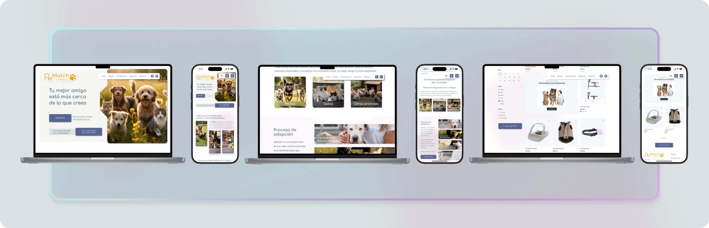
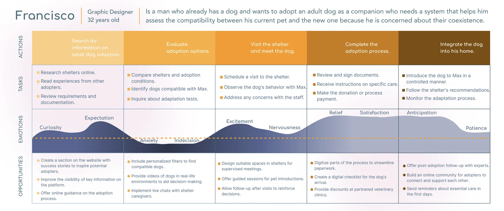
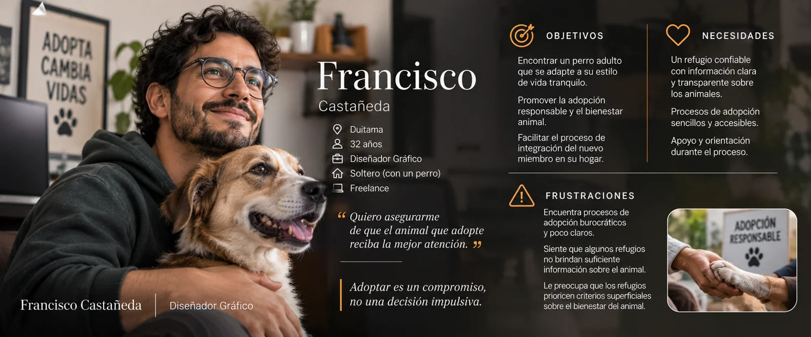
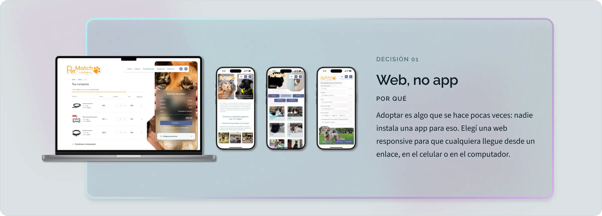
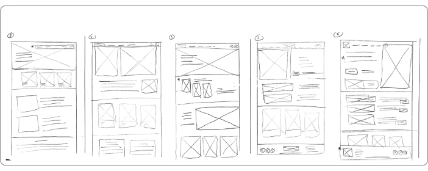
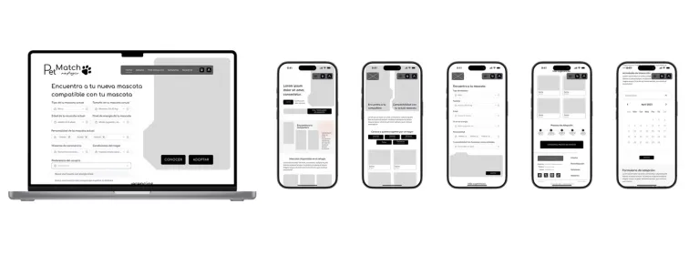
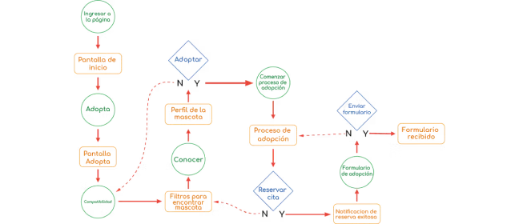
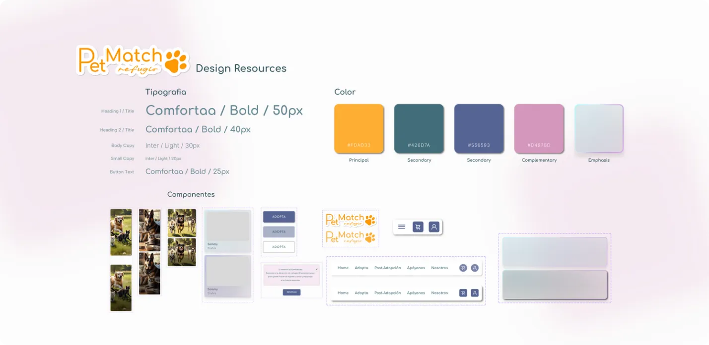
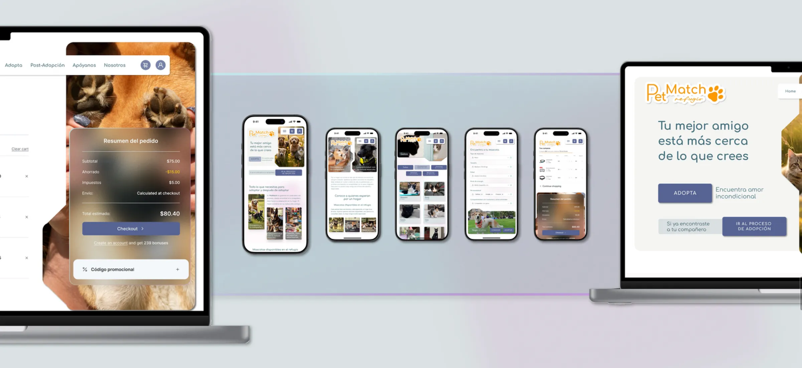

Proyectos / Caso 02 · Web responsive · Proyecto conceptual
petmatch
Diseñé la web de un refugio para que cada persona encuentre una mascota compatible con su vida y con la que ya tiene en casa, y reciba acompañamiento después de adoptar.
Proyecto conceptual del Certificado Google UX.
Mi rol
Proyecto individual: investigación, arquitectura de información, UI y pruebas
Alcance
Web responsive para un refugio: desktop y móvil
Duración
5 semanas
Herramientas
Figma, Adobe Suite

En este caso
00
resumen
desafío
Adoptar es complejo y poco personalizado: los requisitos no son claros y nadie te dice si una mascota encaja con tu estilo de vida o con la que ya vive en casa.
enfoque
Entrevisté a 4 posibles adoptantes, audité 5 plataformas, identifiqué dos perfiles de adoptante, definí un flujo de adopción guiado y lo validé en dos rondas de pruebas.
resultado
Un prototipo hi-fi responsive con flujo de adopción, perfil del adoptante, tienda y servicios post-adopción. El match quedó diseñado en pantallas, pero sin lógica: es el siguiente paso.
01
investigación
Contexto
Quieren adoptar, pero temen que no encaje.
Petmatch es la web de un refugio de animales. En las entrevistas, nadie sabía cómo funciona adoptar: preguntaban a conocidos, buscaban en Instagram o en la alcaldía, y no tenían claro qué papeles necesitaban.
El miedo no era al refugio, sino a equivocarse: “miedo de arrepentirme, que el animal no se adapte”. La oportunidad: ayudar a elegir una mascota compatible con su vida y con la que ya tienen en casa, y acompañar después de adoptar.
El estudio en cifras
4
entrevistas a posibles adoptantes de 23 a 52 años
5
plataformas de adopción auditadas
4
participantes en la prueba del prototipo lo-fi
18/20
tareas completadas sin dificultad
Métodos
Preguntas de investigación
Pregunta principal
¿Pueden los adoptantes encontrar una mascota compatible y completar la adopción sin dificultades?
P1
¿Es intuitivo adoptar?
Qué tan claro resulta el proceso de adopción de principio a fin.
P2
¿Dónde se traban?
Los puntos del flujo donde aparecen dudas o errores.
P3
¿Se entiende el match?
Qué tan claro es el sistema de compatibilidad entre mascotas y adoptantes.
P4
¿Pueden decidir con información?
Si los perfiles dan lo suficiente para tomar una decisión responsable.
Lo que encontré en las entrevistas
Insight 01
Dos perfiles, dos miedos
Quienes buscan su primera mascota y quienes quieren integrar un nuevo miembro a su hogar.
Insight 02
El proceso abruma
Requisitos poco claros y poca información sobre los animales desmotivan a adoptar.
Insight 03
Quieren compañía
Valoran un proceso guiado y apoyo después de la adopción.
“Que alguien como mi abuela pueda entrar.”
Paula, 28
“Poder conocer al perro en persona antes de todo.”
Mariana, 23
“Que esté avalado, que uno no sienta que puede ser una estafa.”
David, 29
“Está bien que haya filtros, pero si hay trabas el perrito se queda sin hogar.”
David, 29
Auditoría competitiva · 5 plataformas de adopción
Comparé el flujo de adopción de tres refugios y dos tiendas con programas de adopción, evaluando primeras impresiones, interacción, diseño visual y contenido.
Fundación TEPA
Fundación · competidor directo
✓ Lo que hace bien
Cuenta la historia y el estado de salud de cada animal, con testimonios reales y el proceso paso a paso.
! Dónde se queda corto
Sin filtros avanzados ni agenda de visitas en línea; los formularios son difíciles en el móvil.
→ Lo que tomé
Contar la historia de cada mascota para generar empatía.
Adopta No Compres
Red de refugios · competidor directo
✓ Lo que hace bien
Filtros por edad, tamaño y temperamento, chat en vivo y un diseño limpio.
! Dónde se queda corto
El formulario es extenso, no se puede guardar y no hay seguimiento después de adoptar.
→ Lo que tomé
Filtrar por temperamento, no solo por tamaño y edad.
IDPYBA Adopciones
Distrito de Bogotá · competidor directo
✓ Lo que hace bien
Respaldo institucional, pasos claros y una sección educativa sobre tenencia responsable.
! Dónde se queda corto
No se sabe cuánto tarda la respuesta y el proceso puede volverse burocrático.
→ Lo que tomé
Mostrar qué pasa después de enviar la solicitud.
Puppis Adopciones
Tienda de mascotas · competidor indirecto
✓ Lo que hace bien
Une adopción y productos para mascotas en un mismo lugar.
! Dónde se queda corto
La tienda le quita protagonismo a la adopción, que además exige contacto presencial.
→ Lo que tomé
Tienda y servicios, pero siempre detrás de la adopción.
Tiendanimal
Tienda de mascotas · competidor indirecto
✓ Lo que hace bien
Diseño claro, filtros avanzados y una muy buena versión móvil.
! Dónde se queda corto
No hay seguimiento después de enviar el formulario ni después de adoptar.
→ Lo que tomé
Acompañar también después de la adopción.
La oportunidad
Ninguna recomienda una mascota según el estilo de vida del adoptante ni según la mascota que ya tiene en casa. Ahí nació el match de Petmatch.
| TEPA | Adopta No Compres | IDPYBA | Puppis | Tiendanimal | |
|---|---|---|---|---|---|
| Filtros de búsqueda | No | Edad, tamaño y temperamento | Edad, tamaño y necesidades | Sin dato | Avanzados |
| Proceso en línea | Sin agenda en línea | Formulario extenso | Pasos definidos | Requiere ir en persona | Fácil de seguir |
| Seguimiento post-adopción | Sí | No | Sí, veterinario | Poco riguroso | No |
| Versión móvil | Deficiente | Buena | Buena | Aceptable | Sobresaliente |
| Recomienda según tu vida o tu mascota | No | No | No | No | No |
Puntos de dolor
No saben si la mascota se adaptará a su vida o a su otra mascota.
Perciben la adopción como complicada y con requisitos poco claros.
La información está dispersa y sin una guía del proceso.
Se sienten solos, sin asesoría ni comunidad.


↻ Toca la ficha para ver la otra cara
Persona
Francisco
Diseñador gráfico que trabaja desde casa con Max, el perro que adoptó hace tres años. Quiere adoptar otro perro adulto, pero duda de la compatibilidad y de los trámites.
Objetivos de diseño
Objetivo principal
Diseñar una plataforma intuitiva y responsiva que facilite la adopción con un sistema de compatibilidad, filtros avanzados y acompañamiento en cada etapa.
01
Elegir con información
Perfiles con historia, personalidad, energía y salud de cada mascota.
02
Saber si encaja
Compatibilidad con el estilo de vida del adoptante y con su mascota actual.
03
No quedarse solo
Acompañamiento después de adoptar: tienda, veterinarios y comunidad.
02
estrategia y decisiones
Estrategia
Convertir la adopción en una decisión acompañada: primero encontrar una mascota compatible, luego un proceso guiado paso a paso y después apoyo para la llegada a casa.
01
Confianza primero
Los adoptantes buscan un refugio serio: información veraz, estado de cada animal y reglas claras desde el inicio.
02
Pasos visibles
La adopción como una secuencia con progreso claro, para que cada persona sepa dónde está y qué sigue.
03
Confirmar cada acción
Agendar una cita o enviar el formulario siempre muestra un mensaje y un cambio visual que lo confirma.
04
Patrones conocidos
La tienda y el perfil siguen convenciones del comercio electrónico: “es como comprar cualquier cosa”.
05
Accesible para todos
Íconos universales, texto alternativo, títulos descriptivos y transiciones suaves entre secciones.
Del dolor a la solución
Decisiones clave

Decisión 01
Web, no app
Por qué
Adoptar es algo que se hace pocas veces: nadie instala una app para eso. Elegí una web responsive para que cualquiera llegue desde un enlace, en el celular o en el computador.
Decisión 02
El match es el eje
Por qué
Puse “hacer match con una mascota compatible” en el centro: los filtros consideran tanto las preferencias del adoptante como la mascota que ya vive en casa.
Decisión 03
Un flujo lineal y guiado
Por qué
Llevé la adopción paso a paso, de la selección a la confirmación, para que los requisitos dejen de ser una sorpresa.
Decisión 04
Acompañar después de adoptar
Por qué
Sumé tienda, directorio de veterinarios y red de alimentos para que el adoptante no quede solo y sus compras apoyen al refugio.
03
validación
Hice dos rondas de pruebas moderadas: la primera con 4 participantes y el prototipo lo-fi, la segunda con el hi-fi.



Lo que observé en la prueba lo-fi · Mapa de afinidad
Usabilidad
“Es que no sé dónde dar clic, esta es la sección pero no sé si en el título o en el fondo.”
“Di clic varias veces porque no sabía si ya estaba agendada la cita.”
Navegación
“Me gusta que sea una secuencia de pasos y uno ve que la información es la correcta y sigue.”
“Está claro cómo proceder en la adopción.”
Funcionalidad
“Es como comprar cualquier cosa en las páginas que visito.”
“Bueno, esto es igual que cualquier página.”
Utilidad
“Me parece fácil, pero necesito colores e imágenes.”
Varios pidieron más color e imágenes para hacerlo más atractivo.
Conclusiones de la prueba lo-fi
18 de 20
tareas se completaron sin dificultad; ninguna quedó sin terminar.
→ El flujo de adopción se entiende.
4 de 4
entendieron cómo funciona la compatibilidad con su mascota actual.
→ El match tiene sentido para ellos.
4 de 4
encontraron la tienda y su perfil sin ayuda.
→ Los patrones conocidos funcionan.
3 de 4
no sabían si su cita había quedado agendada.
→ Confirmar cada acción.
4 de 4
dudaron sobre qué elementos eran clickeables.
→ Señales claras de interacción.
4 de 4
pidieron más imágenes y color.
→ Una interfaz más visual y envolvente.
Qué cambió en cada ronda
Ronda 1 · Prototipo lo-fi
Hallazgo
Cambio en el diseño
No era claro qué elementos eran clickeables.
Hice evidentes los botones y las áreas de clic.
Los perfiles y los pasos de adopción confundían.
Reorganicé las imágenes y los botones del flujo.
Faltaban confirmaciones al agendar o enviar formularios.
Agregué retroalimentación visual en cada acción clave.
Ronda 2 · Prototipo hi-fi
Hallazgo
Cambio en el diseño
Querían ver el match en acción.
Las pantallas del match aún no calculaban: expliqué la lógica (personalidad, energía y necesidades) y lo dejé como prioridad.
Los botones y las imágenes podían ser más claros.
Rediseñé los botones interactivos y optimicé las imágenes.
04
solución
01
Un flujo de adopción a tu medida
Diseñé un flujo lineal, de la búsqueda a la confirmación, con el match en el centro: filtras por tus preferencias y por la mascota que ya tienes, y comparas perfiles detallados.
02
Tu perfil
Desde tu perfil guardas favoritos, sigues el estado de tus solicitudes, gestionas tus compras y participas en la comunidad de adoptantes.
03
Navega libremente
Exploras todos los perfiles sin restricciones y, con filtros interactivos, encuentras y comparas mascotas rápido.
04
Menú fijo
Inicio, Adopta, Post-adopción, Apóyanos, Nosotros, Carrito y Perfil siempre a un clic, sin importar en qué paso estés.
05
Responsive
Diseñé para desktop y móvil: el layout y los controles se adaptan sin perder claridad ni accesibilidad.
06
Todo para después de adoptar
Tienda de accesorios, directorio de veterinarios y red de alimentos en un solo lugar; cada compra apoya al refugio.
07
Perros, gatos y más
Cada especie tiene su propio proceso, con requisitos claros y ajustados a la normativa local, para una adopción responsable.

Design system
Guía de estilo
Combiné calidez y modernidad: Comfortaa para títulos e Inter para lectura, naranja como color principal, azul opaco para textos y morado pastel en los botones, con fotografías que destacan a cada mascota.

Accesibilidad
Transiciones que orientan
Suaves y claras al moverse entre secciones.
Iconos con texto alternativo
Iconos universales acompañados de texto.
Confirmación inmediata
Cada acción clave muestra su resultado al instante.
05
resultados
Qué cambió
✓ Los participantes recorrieron el flujo de adopción y pidieron el match como prioridad.
✓ Cada acción clave confirma su resultado, algo que faltaba en la ronda 1.
✓ El acompañamiento sigue después de adoptar: tienda, veterinarios y alimentos en un solo lugar.
Voz de los usuarios
“Está muy útil, está toda la información, y eso es importante porque tengo una gata; necesito saber que se llevará bien con el que adoptaré.”
“Está muy específico todo, porque puedo seleccionar las características de mi mascota para encontrar una nueva.”
Cómo lo mediría
→ Tiempo para completar la adopción
→ Tasa de error en formulario y selección
→ Tasa de abandono del proceso
→ Satisfacción en encuesta post-uso
→ Escala de usabilidad (SUS)
→ Si la mascota sugerida por el match es la que se adopta
Qué aprendí
La función que más valoraban los usuarios era justo la que no estaba lista: probar antes de tenerla me mostró dónde poner el esfuerzo. Diseñar para desktop y móvil me enseñó cómo cada cambio de tamaño afecta la percepción y la usabilidad.
Próximos pasos
Desarrollar el match
Evaluar la compatibilidad entre el adoptante, su mascota actual y los animales en adopción.
Probar el match con usuarios
Medir si las sugerencias son acertadas y confiables.
Fortalecer la comunidad
Más recursos y asesoría para la adaptación del nuevo integrante.